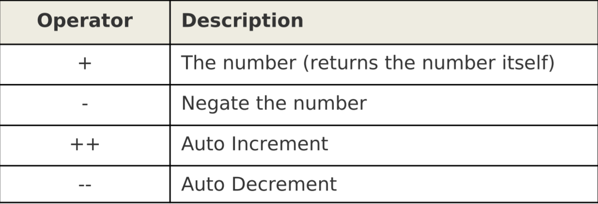
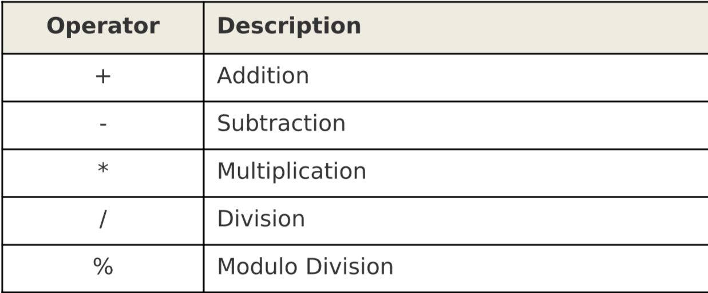

62. Variables(变量)
关键字不能被使用为变量名。
和其他的编程语言不同，你不需要声明变量才能使用它。
如果你想初始化变量，最好在BEGIN块，它将只执行一次
实例
创建一个文件
编写一个awk脚本,统计薪水
|
|
63. Unary Operators（单元操作符）

和数字前的正负号和C语言的自加自减符号一样
遵循负负得正原则
64. Arithmetic Operators(算数运算符)

65. String Operator(字符串运算符)
空格`是字符串操作符，链接两个字符串string3=string1 string2`
66. Assignment Operators(赋值运算符)
like C=、+=、-=、*=、/=、%=
67. Comparison Operators(对比运算符)
like C>、>=、<、<=、!=、==、&&、||
68. Regular Expression Operators(正则表达式运算符)
~匹配正则表达式!~不匹配正则表达式(匹配不符合的)